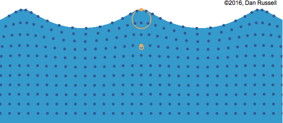

<!doctype html>
<html lang="zh-Hant">
<head>
<meta charset="utf-8">
<meta name="viewport" content="width=device-width, initial-scale=1">
<title>Gerstner Waves</title>
<script src="../_explainer/explainer.js"></script>
</head>
<body>
<script type="text/markdown" id="ex-content">
## 這一章要解決的問題

### 水面還是平的

做完 [URP Setup](urp-setup.html)，湖裡有一片 200 × 200 格、每格 0.3 公尺的水面 mesh。它是平的。這一章讓它真的起伏：每個 vertex 被移到波浪上的位置，石頭旁的水位會漲落，從側面看得到浪的輪廓。對應 Final Demo 的這一條：

> 水面 mesh 本身會上下起伏，不是只靠 texture 捲動假裝在動

做完後，水面由 4 個波疊出不規則的起伏，波峰尖、波谷平，明暗跟著坡面變化；波浪參數放在一份設定資產裡，另有一個浪高總控可以整體調大調小。

### 這一章怎麼走

每一步都先在 Unity 裡做出來，看到哪裡不對，再講下一段原理去修它：

| 步驟 | 做什麼 | 做完會看到的問題 |
| --- | --- | --- |
| [第一步](#第一步：用一個-sine-波讓水面上下動) | 一個 sine 波讓 vertex 上下動 | 波峰和波谷一樣圓，不像水 |
| [第二步](#第二步：Gerstner-波，讓波峰變尖) | 改成 Gerstner 波，vertex 也前後動 | 明暗沒有跟著波浪變 |
| [第三步](#第三步：重算-normal，讓光影跟著波浪) | 由偏導數求出 normal | 要疊更多波，node 會多到接不完 |
| [第四步](#第四步：把同一個波改寫成-HLSL) | 把同一個波改寫成 HLSL | (結果和[第三步](#第三步：重算-normal，讓光影跟著波浪)一樣，為下一步鋪路) |
| [第五步](#第五步：疊加-4-個波) | 用 for 迴圈疊加 4 個波 | 抬頭時水面會整片消失 |
| [第六步](#第六步：設定資產與-WaterBody) | 建立設定資產與 `WaterBody` | 想整體調浪高時，要改 4 個陡度 |
| [第七步](#第七步：浪高總控) | 加上浪高總控 | |

水面在這一章維持 opaque 的藍色。

### 還沒做第 4 章的話

這一章接著 [Shader Graph](shader-graph.html) 的結尾：水面套著自己的 Lit Shader Graph `SG_Water`，是 opaque 的藍色。還沒做那一章的話，先用這幾步建出同樣的狀態：

1. 在 `Assets/Water/Shaders/` 按右鍵 > Create > Shader Graph > URP > **Lit Shader Graph** (也可能叫 `Lit`)，命名為 `SG_Water`，雙擊打開。
2. Graph Inspector 的 Graph Settings：Precision 設 **Single**、Surface Type 設 **Opaque**、Fragment Normal Space 設 **Tangent**。
3. Blackboard 標題列的 **+** > **Color**，Name 填 `WaterColor` (Reference 會是 `_WaterColor`)，Default Value 設成藍色。把它拖進 Workspace，`Out` 接到 Fragment 的 **Base Color**。按 **Save Asset**。
4. 對 `SG_Water` 按右鍵 > Create > **Material**，改名為 `M_LakeWater`，移到 `Assets/LakeDemo/Materials/`。
5. 選取 `Lake` 底下的 `WaterSurface`，在 Mesh Renderer 的 Materials 把 `M_WaterTemp` 換成 `M_LakeWater`。

視窗各區域、Master Stack 的說明在 Shader Graph 章。

## 第一步：用一個 sine 波讓水面上下動

### 一個點的高度怎麼隨位置與時間變

先只看一個方向：一道波沿著世界的 $x$ 軸前進，波峰排成一條條和 $z$ 軸平行的直線。水面上每一點的高度只和它的 $x_0$ 與時間 $t$ 有關 (下標 0 表示水面平靜時的位置)：

$$y = A \sin(kx_0 - \omega t)$$

波長 $L$、週期 $T$、頻率、波速 $c = L / T$ 就是國中物理那一套。放進 sin 時，只是把它們換算成角度：

| 符號 | 意思 | 單位 |
| --- | --- | --- |
| $A$ | 振幅：波峰比靜止水面高多少 | 公尺 |
| $k$ | 角波數，$k = 2\pi / L$：$x_0$ 每前進 1 公尺，角度增加多少。前進一個波長剛好轉一圈 | 弧度 / 公尺 |
| $\omega$ | 角頻率，$\omega = 2\pi / T$：每過 1 秒，角度減少多少。過一個週期剛好轉一圈 | 弧度 / 秒 |
| $\varphi$ | 相位，$\varphi = kx_0 - \omega t$，也就是 sin 裡的那個角度 | 弧度 |

波速換成這兩個符號是 $c = L / T = \omega / k$。$-\omega t$ 讓波峰往 $+x$ 走：$t$ 增加時，同一個相位要在更大的 $x_0$ 才出現。

### 波速由波長決定

深水波的波速只由波長決定：$c = \sqrt{gL / 2\pi}$，$g = 9.81$ 公尺 / 秒² 是重力加速度。代入 $L = 2\pi / k$ 得 $c = \sqrt{g / k}$，再用 $\omega = ck$ 換成角頻率，就是深水的 [[dispersion relation]] (色散關係)：

$$\omega = \sqrt{g k}$$

以 $L = 6$ 公尺為例：$k \approx 1.047$，$\omega \approx 3.205$ 弧度 / 秒，波速 $c \approx 3.06$ 公尺 / 秒，週期 $T \approx 1.96$ 秒。深水波速可以用能量守恆推出來，見[「深水波速的由來」](#深水波速的由來)。

所以這一章**不開波速參數**：給了波長，速度就決定了。好處是好幾個波疊在一起時 ([第五步](#第五步：疊加-4-個波))，長的波跑得快、短的跑得慢，彼此不會整齊地一起移動，看起來比較自然，也少一個容易調得不自然的參數。湖中央水深約 5 公尺，比這一章用到的波長 (最長 9 公尺) 的一半還深，用深水的公式是合理的近似。靠岸的地方水變淺，真實的波會照淺水波 $c = \sqrt{gd}$ 變慢、轉向和岸邊平行；這一章不處理，波浪直接被湖岸蓋住。

### 為什麼在 world space 算

公式裡的 $x_0$ 用哪一種座標，有兩個選擇：

- [[object space]]：相對於水面 GameObject 自己的原點。`WaterSurface` 在 `Lake` 底下，`Lake` 放在湖心，所以 object space 的 $x_0$ 從湖心算起。
- [[world space]]：整個場景共用的座標。

這一章用 world space，理由有二：

1. 波長是世界尺寸。GameObject 被縮放時，object space 的 1 單位不再是 1 公尺，波長會跟著變；world space 的 6 公尺永遠是 6 公尺。
2. 相鄰的兩片水相位一致。同一張地圖上有兩片相鄰的水時，兩邊在交界處算出來的高度相同，不會錯開。

但 Vertex 區的 Position block 要的是 object space 的最終位置。所以流程是：取得 vertex 的 world space 位置 → 加上波浪的位移 → 轉回 object space → 接到 Position block。

### 在 Shader Graph 接出來

1. 建立兩個 Property

   在 Blackboard 按 **+** > **Float**，建立兩個 Property。選取 Property，在 Graph Inspector 的 Node Settings 設定：

   | Name | Default Value | 其他 |
   | --- | --- | --- |
   | `Amplitude` | 0.3 | Scope：**Per Material**；Show In Inspector：勾選 |
   | `Wavelength` | 6 | 同上 |

   **Scope** 決定這個值由誰設定：Per Material 是每個 Material 各自一份，可以在 Material 的 Inspector 調，也可以從 C# 設。Reference 欄會自動填成 `_Amplitude`、`_Wavelength`，從 C# 設定時用的就是這個名字。

   把兩個 Property 從 Blackboard 拖進 Workspace，會出現它們的 Property node。

2. 加入 node

   在 Workspace 的空白處按空白鍵 (或按右鍵 > Create Node)，搜尋 node 名稱，雙擊加入。拉線：從一個 node 的輸出 (右側的點) 拖到另一個 node 的輸入 (左側的點)。一個輸出可以接好幾條線，一個輸入只能接一條。輸入沒接線時，旁邊有一個小欄位可以直接填數字。

   下面兩張圖是這一步的接法，分成前半 (算出相位 $\varphi$) 與後半 (把 $\varphi$ 變成 vertex 位置)。node 下方的灰字是它的設定或它算出的量。

   <ex-fig of="gerstner-phase-graph" caption="第一步的前半：算出 k、ω 與相位 φ。粉紅色是 Property" />

   <ex-fig of="gerstner-height-offset-graph" caption="第一步的後半：φ 變成高度，加到 world 位置上，轉回 object space 接到 Position block" />

   前半的 node：

   | node | 設定 | 輸入接什麼 | 算出 |
   | --- | --- | --- | --- |
   | Wavelength (Property) | | | $L$ |
   | Constant | Mode：**TAU** | | $2\pi \approx 6.2832$ |
   | Divide | | A ← Constant；B ← Wavelength | $k = 2\pi / L$ |
   | Multiply | | A ← Divide；B 填 **9.81** | $gk$ |
   | Square Root | | In ← 上一個 Multiply | $\omega = \sqrt{gk}$ |
   | Position | Space：**World** | | vertex 的 world space 位置 |
   | Split | | In ← Position | R = $x_0$、G = $y$、B = $z_0$ |
   | Multiply | | A ← Split 的 R；B ← Divide | $kx_0$ |
   | Time | | | 輸出 Time 是經過的秒數 $t$ |
   | Multiply | | A ← Time 的 Time；B ← Square Root | $\omega t$ |
   | Subtract | | A ← $kx_0$ 那個 Multiply；B ← $\omega t$ 那個 Multiply | $\varphi = kx_0 - \omega t$ |

   後半的 node：

   | node | 設定 | 輸入接什麼 | 算出 |
   | --- | --- | --- | --- |
   | Sine | | In ← Subtract | $\sin \varphi$ |
   | Amplitude (Property) | | | $A$ |
   | Multiply | | A ← Sine；B ← Amplitude | 高度 $A\sin \varphi$ |
   | Combine | | R 填 0；G ← 上一個 Multiply；B 填 0 | 位移 $(0,\ A\sin \varphi,\ 0)$，從 RGB 輸出 |
   | Position | Space：**World** (可以另放一個，也可以從前半那個拉線) | | vertex 原本的 world space 位置 |
   | Add | | A ← Position；B ← Combine 的 RGB | 移動後的 world space 位置 |
   | Transform | From：**World**；To：**Object**；Type：**Position** | In ← Add | 轉回 object space |
   | Vertex 的 Position block | | ← Transform | |

   Transform 的 Type 選 Position，是因為 Position 會套用平移：world 與 object 之間差了 `Lake` 的位置，位置要連平移一起換算。

3. 移動後的位置

   後半的 node 合起來是：

   $$P(x_0, z_0) = (x_0,\ 0,\ z_0) + (0,\ A\sin \varphi,\ 0)$$

   $P(x_0, z_0)$ 讀作「原本在 $(x_0, 0, z_0)$ 的 vertex，被移到哪裡」。輸入 $(x_0, z_0)$ 是 vertex 在平靜水面時的原始位置，相當於它的編號，不隨波浪改變，也就是 Position (World) 讀到的位置；輸出 $P$ 是它用 Add 加上位移 (Sine、Multiply、Combine) 後的實際位置，再由 Transform 轉回 object space。[第一步](#第一步：用一個-sine-波讓水面上下動)只有上下位移，$P$ 的水平分量還等於 $(x_0, z_0)$，下一步起兩者就不同了。

4. 按 Save Asset

### 現在應該看到

Scene 視窗開著 Always Refresh 時，不按 Play 也應該看得到水面在動；不動的話，按 Play 在 Game 視窗看。

1. 看岸邊與石頭

   湖的緩坡上，水邊線會前後移動；半泡的石頭露出水面的高度一下高一下低。漲落的幅度是 0.3 公尺 (Amplitude)，大約每 2 秒一次 (週期 1.96 秒)。

2. 從側面低角度看

   用 Scene 視窗攝影機 (按住右鍵加 WASD 飛行) 降到水面高度、面向 $+z$ (讓 $x$ 軸在畫面左右)：水面是一道道和 $z$ 軸平行的浪，往 $+x$ 移動，相鄰浪峰間隔 6 公尺。

3. 從正上方看，幾乎看不出起伏

   水面是同一種藍色，看不出哪裡高哪裡低。原因是光影還沒跟著波浪變，這是[第三步](#第三步：重算-normal，讓光影跟著波浪)要修的事；現在先用前兩項確認形狀。

| 看到的現象 | 原因通常是 | 怎麼修 |
| --- | --- | --- |
| 水面整片一起上下，沒有一道道的浪 | 相位沒有隨 $x_0$ 變：Split 的 R 沒接到 $kx_0$ 的 Multiply，或接成了 G | 照 node 表重接 |
| 湖裡沒有水，遠處多了一片水面 | 少了 Transform，或 From / To 選反：world 位置被當成 object 位置，水面被多推了一個 `Lake` 的位置 | 補上 Transform，From World、To Object、Type Position |
| 浪往 $-x$ 走 | Subtract 的 A、B 接反 | 對調 |
| 水面變成密密麻麻的細紋或整片抖動 | Divide 的 A、B 接反 ($k$ 變成 $L/2\pi$)，或 Wavelength 是 0 | 對調；把 Wavelength 設回 6 |
| 波不動 | Scene 視窗沒開 Always Refresh，或編輯模式下時間不前進 | 按 Play 在 Game 視窗看 |
| 水面變粉紅色或 Console 有紅字 | graph 有錯，或 Save Asset 後 Material 沒套上 | 看 Console 的第一行；確認 `WaterSurface` 的 Material 是 `M_LakeWater` |
| 改了 graph 沒變化 | 忘了按 Save Asset | 按 Save Asset |

## 第二步：Gerstner 波，讓波峰變尖

### sine 波哪裡不對

從側面看[第一步](#第一步：用一個-sine-波讓水面上下動)的浪：波峰和波谷形狀一樣，都是圓的，只是一個朝上一個朝下。真的水波不是這樣，風吹起的浪波峰窄而尖、波谷寬而平。

原因要從 vertex 怎麼移動看起。sine 波裡每個 vertex 都待在自己的 $x_0$ 上、只沿著直線上下動，vertex 之間的水平距離永遠不變。要讓波峰變窄，波峰附近的 vertex 必須往波峰擠；要讓波谷變寬，波谷附近的 vertex 必須往外散開。也就是說，vertex 除了上下，還要前後移動。

### 讓 vertex 也前後移動

[[Gerstner]] 波 (一種讓水面上的點同時上下與前後移動的波形，因提出者 Gerstner 得名) 讓每個 vertex 繞著自己原本的位置畫一個半徑 $A$ 的小圓：

$$P_x = x_0 + A\cos \varphi, \qquad P_y = A\sin \varphi, \qquad \varphi = kx_0 - \omega t$$

$P_x$、$P_y$ 是 $P$ 的 $x$、$y$ 分量，也就是 vertex 移動後的座標。

高度和[第一步](#第一步：用一個-sine-波讓水面上下動)一樣是 $A\sin \varphi$，多出來的是水平位移 $A\cos \varphi$。看它怎麼讓 vertex 擠向波峰：波峰在 $\varphi = \pi/2$ 的地方。

- 波峰左邊一點的 vertex，$\varphi$ 略小於 $\pi/2$，$\cos \varphi > 0$，被往 $+x$ (往右) 推，靠向波峰。
- 波峰右邊一點的 vertex，$\varphi$ 略大於 $\pi/2$，$\cos \varphi < 0$，被往 $-x$ (往左) 推，也靠向波峰。
- 波谷 ($\varphi = 3\pi/2$) 兩邊正好相反，vertex 被往外推，散開。

<ex-fig of="sine-vs-gerstner-vertex-orbits" caption="同樣波長 6 m、同樣振幅的兩種波 (陡度 0.8，水平與垂直同比例)。左：每個 vertex 沿直線上下。右：每個 vertex 繞一個小圓，只畫出每隔兩個 vertex 的圓" />

真實的深水波就是這樣動：下面的動畫裡，每一點都繞著自己的位置轉圈，波峰尖、波谷平。越深的地方圓越小 (橘色的兩個圈)，這一章只管水面那一層。

<figure class="ex-ig"><figcaption>深水波裡水的運動。Animation courtesy of Dr. Dan Russell, Grad. Prog. Acoustics, Penn State (CC BY-NC-ND 4.0)</figcaption></figure>

### 在 Shader Graph 加上水平位移

<ex-fig of="gerstner-horizontal-offset-steepness-graph" at="1" caption="第二步 (前半)：綠框是新加的 node 與線。Amplitude 同時接到兩個 Multiply 的 B" />

| node | 輸入接什麼 | 算出 |
| --- | --- | --- |
| Cosine | In ← [第一步](#第一步：用一個-sine-波讓水面上下動)的 Subtract | $\cos \varphi$ |
| Multiply | A ← Cosine；B ← Amplitude | $A\cos \varphi$ |
| ([第一步](#第一步：用一個-sine-波讓水面上下動)的 Combine) | **R** 改接 ← 上一個 Multiply (原本填 0) | 位移 $(A\cos \varphi,\ A\sin \varphi,\ 0)$ |

按 Save Asset。位置變成：

$$P(x_0, z_0) = (x_0,\ 0,\ z_0) + (A\cos \varphi,\ A\sin \varphi,\ 0)$$

現在應該看到：從側面看，浪峰比[第一步](#第一步：用一個-sine-波讓水面上下動)窄、浪谷比[第一步](#第一步：用一個-sine-波讓水面上下動)寬。Amplitude 0.3 時差別不大，下一節會把它調大。

### 波峰打結：振幅有上限

選取 `M_LakeWater` Material，在 Inspector 把 **Amplitude** 慢慢從 0.3 調大到 1.2，同時從側面看水面。

調到大約 0.95 時，浪峰變成尖角；再大，浪峰會變成一個翻過來的小圈，畫面上出現閃爍的黑色或破洞。這叫波峰打結：浪峰的 vertex 被推過了頭，跑到隔壁 vertex 的另一側，mesh 自己穿過自己，三角形翻了面。

<ex-fig of="gerstner-steepness-loop" caption="同一個波長 (6 m) 在三種陡度下的形狀" />

上限在哪裡，可以從「vertex 被擠多少」算出來。

看浪峰附近兩個相鄰的 vertex：左邊那個原本在 $x_0$，右邊那個原本在 $x_0 + \Delta x_0$，相距 $\Delta x_0$；推動之後的新距離記作 $\Delta P_x$。$\Delta P_x$ 還是正的，右邊那個就還在右邊，只是靠近了；變成負的，右邊那個被推到左邊那個的左側，順序顛倒，就是打結。所以要算的是 $\Delta P_x$。

每個 vertex 都被往水平方向推了 $A\cos \varphi$，但兩個的 $\varphi$ 不同，被推的量也不同。新距離就是原距離加上「右邊被推的量減左邊被推的量」。

兩個被推的量差多少？右邊那個的 $x_0$ 多了 $\Delta x_0$，相位跟著多了 $k\,\Delta x_0$：

$$k\,(x_0 + \Delta x_0) - \omega t = \varphi + k\,\Delta x_0$$

$\cos$ 的斜率是 $-\sin$，所以 $\Delta x_0$ 很小時，兩個被推的量相差：

$$A\cos(\varphi + k\,\Delta x_0) - A\cos \varphi \approx (k\,\Delta x_0)\cdot A\,(-\sin \varphi) = -Ak\sin \varphi\,\Delta x_0$$

代回去：

$$\Delta P_x = \Delta x_0 - Ak\sin \varphi\,\Delta x_0 = (1 - Ak\sin \varphi)\,\Delta x_0$$

在浪峰 $\sin \varphi = 1$，兩個原本相距 $\Delta x_0$ 的 vertex，現在相距 $(1 - Ak)\,\Delta x_0$：

- $Ak < 1$：還是正的，vertex 擠近但順序不變。
- $Ak = 1$：距離變成 0，所有 vertex 擠在一點，這就是尖角。
- $Ak > 1$：距離變成負的，vertex 的順序顛倒，mesh 翻面打結。

所以振幅的上限是 $A = 1/k$。以 $L = 6$ 公尺為例，$1/k \approx 0.955$ 公尺，和上面看到的 0.95 一致。

### 改用陡度當參數

這個上限會隨波長改變 (波長 3 公尺時上限只有 0.48 公尺)，用振幅當參數時，每換一次波長都要重算上限。換個參數就簡單了：定義 [[steepness]] (陡度)

$$S = kA$$

上限永遠是 $S = 1$，和波長無關。參數改成陡度，振幅由它算出：

$$A = \frac{S}{k}$$

1. 移除 Amplitude

   在 Blackboard 選取 `Amplitude`，按 Delete。graph 裡它的 Property node 會一起消失。

2. 建立 Steepness

   Blackboard **+** > **Float**：

   | 設定 | 值 |
   | --- | --- |
   | Name | `Steepness` |
   | Mode | **Slider**，Min 0、Max 1 |
   | Default Value | 0.5 |
   | Scope | Per Material；Show In Inspector 勾選 |

   Mode 設成 Slider，Material 的 Inspector 就只能在 0 到 1 之間拉，拉不出打結的波。

3. 接上

   <ex-fig of="gerstner-horizontal-offset-steepness-graph" at="2" caption="第二步 (後半)：Amplitude 換成 Steepness ÷ k" />

   | node | 輸入接什麼 | 算出 |
   | --- | --- | --- |
   | Steepness (Property) | | $S$ |
   | Divide | A ← Steepness；B ← [第一步](#第一步：用一個-sine-波讓水面上下動)算 $k$ 的那個 Divide | $A = S / k$ |
   | (兩個 Multiply) | B 都改接 ← 上一個 Divide | $A\sin \varphi$、$A\cos \varphi$ |

   按 Save Asset。

### 現在應該看到

- `M_LakeWater` 的 Inspector 裡 Amplitude 不見了，多了 Steepness 滑桿，預設 0.5。
- 陡度 0.5、波長 6 公尺時，振幅是 $0.5 / 1.047 \approx 0.48$ 公尺：石頭旁的水位比[第一步](#第一步：用一個-sine-波讓水面上下動)漲落得更多。
- 浪峰窄、浪谷寬。站在石頭旁看同一點：水位在高處停留的時間短，在低處停留的時間長 (浪峰窄，所以經過得快)。
- 把 Steepness 拉到 1，浪峰變成尖角，不會打結。看完拉回 0.5。

| 看到的現象 | 原因通常是 | 怎麼修 |
| --- | --- | --- |
| 浪峰變寬、浪谷變尖 (和預期相反) | Combine 的 R、G 接反 (R ← sin 那支、G ← cos 那支) | R ← Cosine 那個 Multiply、G ← Sine 那個 Multiply |
| 水面整片前後晃動，浪形沒變 | Cosine 的 In 沒接 Subtract (接到了常數) | 重接 |
| 水面平了 | Divide ($A = S/k$) 的 A、B 接反，或 Steepness 是 0 | 對調；把 Steepness 調回 0.5 |
| Steepness 調到 1 以下仍然打結 | [第三步](#第三步：重算-normal，讓光影跟著波浪)之前不會發生；若發生，Divide 的 B 接到了 Wavelength 而不是 $k$ | B 接[第一步](#第一步：用一個-sine-波讓水面上下動)算 $k$ 的 Divide |

## 第三步：重算 normal，讓光影跟著波浪

### 光影哪裡不對

從正上方或斜上方看，水面還是一片平平的藍色，看不出浪的起伏；只有從側面看輪廓、看水邊線，才知道它在動。

[[Lit]] shader 決定一個點多亮，靠的是那一點的 [[normal]]：normal 越正對著光，那一點越亮。我們移動了 vertex 的位置，但 Normal block 沒接線，Unity 就沿用 mesh 原本的 normal，不會依新的形狀重算；`WaterMesh` 是對平的 mesh 算 normal 的，每個 vertex 的 normal 都是正上方 $(0, 1, 0)$。所以整片水面不論坡向，normal 都朝上，亮度就到處一樣。這一步自己算出 normal，接到 Normal block。

為了等一下看得出差別，先把光調成低角度：選取 Directional Light，記下它原本的 Rotation，暫時改成 (20, 90, 0)。這樣光從 $-x$ 往 $+x$、以 20 度的低角度照過來，和波前進的方向在同一條線上。檢查完再改回原本的值。

### normal 從哪裡來：兩條 tangent

在曲面上的一點，沿著兩個不同方向各畫一條貼著表面的線，叫 tangent；兩條 tangent 的 cross (外積) 垂直於它們兩個，也就垂直於表面，這就是 normal。

前兩步的 $P(x_0, z_0)$ 輸入原始位置、輸出移動後的位置，所有 vertex 的輸出合起來就是水面，這種寫法叫曲面的參數式。只上下移動的波，水平位置不變，可以直接寫成高度 $y = h(x, z)$；Gerstner 波的 $P_x = x_0 + A\cos \varphi$ 不等於輸入的 $x_0$，只能寫成參數式。

參數式的 tangent 在 [Vector Math](vector-math.html#vertex-也會水平移動時) 推過：沿 $x_0$ 的 tangent 是 $\partial P / \partial x_0$，讀作「$P$ 對 $x_0$ 的 [[partial derivative]] (偏導數)」，也就是固定 $z_0$、只讓 $x_0$ 增加一點點時，$P$ 往哪個方向移動；沿 $z_0$ 的 tangent 是 $\partial P / \partial z_0$。

計算還會用到兩個斜率：$\sin \varphi$ 對 $\varphi$ 的斜率是 $\cos \varphi$；$\cos \varphi$ 對 $\varphi$ 的斜率是 $-\sin \varphi$。可以用兩個點驗證：$\sin$ 在 0 的地方斜率最大、等於 1 = $\cos 0$；在 $\pi/2$ (波峰) 是平的，斜率 0 = $\cos(\pi/2)$。

### 對 x₀ 取偏導

把[第二步](#第二步：Gerstner-波，讓波峰變尖)的 $P(x_0, z_0)$ 兩項加起來：

$$P(x_0, z_0) = (x_0 + A\cos \varphi,\ A\sin \varphi,\ z_0),\quad \varphi = kx_0 - \omega t$$

這是 [Vector Math](vector-math.html#vertex-也會水平移動時) 的通式 $T = (1 + \partial D_x/\partial x_0,\ \partial h/\partial x_0,\ \partial D_z/\partial x_0)$ 在 $D_x = A\cos \varphi$、$h = A\sin \varphi$、$D_z = 0$ 的情形，向量可以逐分量取偏導的理由也在那一節。$\varphi$ 裡面有 $x_0$，先求它的偏導 ($z_0$、$t$ 都當常數)：

$$\frac{\partial \varphi}{\partial x_0} = k$$

- $x$ 分量：$1 - Ak\sin \varphi$
  > $x_0$ 的偏導是 1；$A\cos \varphi$ 用 chain rule (連鎖律：外層對內層的斜率，乘上內層對變數的斜率)，$\cos \varphi$ 對 $\varphi$ 的斜率 $-\sin \varphi$，乘上 $\partial \varphi/\partial x_0 = k$
- $y$ 分量：$Ak\cos \varphi$
  > 同樣用 chain rule：$\sin \varphi$ 對 $\varphi$ 的斜率 $\cos \varphi$，乘上 $k$
- $z$ 分量：0
  > $z_0$ 和 $x_0$ 互相獨立，固定 $z_0$ 時它不變

$Ak$ 就是[第二步](#第二步：Gerstner-波，讓波峰變尖)的陡度 $S$：

$$T = \frac{\partial P}{\partial x_0} = (1 - S\sin \varphi,\ S\cos \varphi,\ 0)$$

$k$ 是 chain rule 帶進來的，所以 normal 由陡度 $S$ 決定，而不是振幅。$x$ 分量 $1 - S\sin \varphi$ 就是[第二步](#第二步：Gerstner-波，讓波峰變尖)的擠壓比例 $\Delta P_x / \Delta x_0$，同樣是 $x_0$ 動一點點時 $P_x$ 動多少。

這個波只沿 $x$ 前進，$z_0$ 不影響任何東西，所以沿 $z_0$ 的 tangent 就是平面時的樣子：

$$B = \frac{\partial P}{\partial z_0} = (0,\ 0,\ 1)$$

### 兩條 tangent cross 得到 normal

$$N = B \times T = (-S\cos \varphi,\ 1 - S\sin \varphi,\ 0)$$

用 cross 的公式 $a \times b = (a_y b_z - a_z b_y,\ a_z b_x - a_x b_z,\ a_x b_y - a_y b_x)$ 代入 $a = B$、$b = T$ 就得到上式。順序是 $B \times T$ 而不是 $T \times B$：拿平面驗算，$T = (1, 0, 0)$、$B = (0, 0, 1)$，$B \times T = (0, 1, 0)$ 朝上，反過來會朝下。

帶數字看兩個點 (陡度 0.5)：

<iframe src="../_diagram/interactive/gerstner-tangent/index.html" title="點沿著 Gerstner 波移動時，T、B、N 怎麼變？" style="height:500px"></iframe>

- 甲，上坡的中點，$\varphi = 0$：$T = (1, 0.5, 0)$，往右上；$N = (-0.5, 1, 0)$，normalize (正規化：保持方向，長度變成 1) 後是 $(-0.447, 0.894, 0)$，往左 ($-x$) 傾斜約 27 度，面向迎面而來的光。
- 乙，波峰，$\varphi = \pi/2$：$T = (0.5, 0, 0)$，$N = (0, 0.5, 0)$，normalize 後朝正上方。$T$ 只剩一半長，就是波峰的擠壓比例 $1 - S$。

$N$ 的長度不是 1 (例如乙的長度是 0.5)，而光照要的是方向，所以最後要 normalize。

陡度 1 的波峰是例外：$T = (1 - 1,\ 0,\ 0) = (0, 0, 0)$，$N = B \times T$ 也是 0，沒有方向可以 normalize，尖角那一點沒有 normal。[第二步](#第二步：Gerstner-波，讓波峰變尖)把 Steepness 拉到 1 時看到的尖角就是這種點。

### 在 Shader Graph 接出 normal

<ex-fig of="gerstner-normal-graph" caption="第三步：綠框是新加的 node 與線" />

| node | 設定 | 輸入接什麼 | 算出 |
| --- | --- | --- | --- |
| Multiply | | A ← Steepness；B ← [第二步](#第二步：Gerstner-波，讓波峰變尖)的 Cosine | $S\cos \varphi$ |
| Negate | | In ← 上一個 Multiply | $-S\cos \varphi$ |
| Multiply | | A ← Steepness；B ← [第一步](#第一步：用一個-sine-波讓水面上下動)的 Sine | $S\sin \varphi$ |
| One Minus | | In ← 上一個 Multiply | $1 - S\sin \varphi$ |
| Combine | | R ← Negate；G ← One Minus；B 填 0 | $N$，從 RGB 輸出 |
| Normalize | | In ← Combine 的 RGB | 長度 1 的 $N$ |
| Transform | From：**World**；To：**Object**；Type：**Normal** | In ← Normalize | object space 的 normal |
| Vertex 的 Normal block | | ← Transform | |

Transform 的 Type 輸入是表面 normal 時選 Normal。normal 和位置不同，不受平移影響，換算方式也不一樣，所以不能沿用 Position。

按 Save Asset。

### 現在應該看到

<ex-fig of="wave-normal-recalc-shading" caption="同一個波 (陡度 0.5、波長 6 m) normal 沒重算與重算後的差別" />

- 從斜上方、背對著光 (面向 $+x$) 看：每道浪朝 $-x$ 的那一面 (上坡，迎著光) 比較亮，朝 $+x$ 的那一面比較暗，亮暗的條紋跟著浪往 $+x$ 移動。
- 從正上方看也看得出一條條明暗相間的浪。
- 把 Steepness 拉到 0，水面變平，明暗也消失；拉回 0.5。
- 看完把 Directional Light 的 Rotation 改回原本的值。

| 看到的現象 | 原因通常是 | 怎麼修 |
| --- | --- | --- |
| 整片水面變暗、像背光 | normal 朝下：Combine 的 G 接成了 $S\sin \varphi$ (少了 One Minus) | G ← One Minus |
| 亮面在 $+x$ 那一側 (和上面相反) | 少了 Negate，R 是 $+S\cos \varphi$ | R ← Negate |
| 明暗看起來像格子或怪怪的斑塊 | Transform 的 Type 選成 Position 或 Direction | 改成 Normal |
| 改了沒有變化 | Normal block 沒有接線，或忘了 Save Asset | 接上 Normal block；按 Save Asset |

## 第四步：把同一個波改寫成 HLSL

### 為什麼要改寫

現在只有一個波，接起來已經二十多個 node。下一步要疊 4 個波，每個波的方向、陡度、波長都不同，照這樣接要再複製三份。

Shader Graph 的 node 沒有迴圈，需要迴圈的計算寫進 **Custom Function** node 的 [[HLSL]] 裡。

這一步先不改功能：把[第三步](#第三步：重算-normal，讓光影跟著波浪)的 node 一對一改寫成 HLSL，換上去之後畫面應該完全一樣。這樣你可以拿已經看懂的 node 對照每一行程式，下一步再加迴圈。

### 這一章用到的 HLSL

型別、取分量、內建函式、`out` 與 `_float` 後綴、include guard，以及 Custom Function node File 模式的設定，都和 [Shader Graph](shader-graph.html) 章的 `ColorSteps.hlsl` 相同，這裡不再重講。新的寫法 (區域陣列、`for` 迴圈) 在[第五步](#第五步：疊加-4-個波)到那裡再看。

### GerstnerWaves.hlsl 第一版

1. 建立檔案

   和 `ColorSteps.hlsl` 一樣，在 `Assets/Water/Shaders/` 底下新增文字檔 `GerstnerWaves.hlsl`。

2. 寫入內容

   ```hlsl Assets/Water/Shaders/GerstnerWaves.hlsl 第一版 (一個波)
   //UNITY_SHADER_NO_UPGRADE
   #ifndef WATER_GERSTNER_WAVES_INCLUDED
   #define WATER_GERSTNER_WAVES_INCLUDED

   void GerstnerWaves_float(float3 PositionWS, float WaveTime, float Steepness, float Wavelength,
                            out float3 PositionOut, out float3 NormalOut)
   {
       float k = 6.28318530 / Wavelength;
       float omega = sqrt(9.81 * k);
       float phi = k * PositionWS.x - omega * WaveTime;
       float a = Steepness / k;
       float s = sin(phi);
       float c = cos(phi);

       PositionOut = PositionWS + float3(a * c, a * s, 0);
       NormalOut = normalize(float3(-Steepness * c, 1 - Steepness * s, 0));
   }

   #endif
   ```

3. 逐行對照

   檔頭三行與最後的 `#endif` 是 include guard，名字換成這個檔案自己的 `WATER_GERSTNER_WAVES_INCLUDED`。

   函式本體，每一行對應[第三步](#第三步：重算-normal，讓光影跟著波浪)的 node：

   | HLSL | 對應的 node |
   | --- | --- |
   | `float3 PositionWS` | Position (World)。WS 是 world space 的縮寫 |
   | `float WaveTime` | Time 的 Time 輸出 |
   | `float Steepness`、`float Wavelength` | 兩個 Property |
   | `float k = 6.28318530 / Wavelength;` | Constant (TAU) ÷ Wavelength (Divide)。6.28318530 就是 Constant node TAU 的值 |
   | `float omega = sqrt(9.81 * k);` | Multiply (×9.81)、Square Root |
   | `float phi = k * PositionWS.x - omega * WaveTime;` | Split 的 R、兩個 Multiply、Subtract。`PositionWS.x` 就是 $x_0$，`phi` 就是 $\varphi$ |
   | `float a = Steepness / k;` | Divide ($S \div k$) |
   | `float s = sin(phi);`、`float c = cos(phi);` | Sine、Cosine。存進變數，後面用兩次不必重算 |
   | `PositionOut = PositionWS + float3(a * c, a * s, 0);` | 兩個 Multiply、Combine、Add |
   | `NormalOut = normalize(float3(-Steepness * c, 1 - Steepness * s, 0));` | 兩個 Multiply、Negate、One Minus、Combine、Normalize |

   Transform 沒有出現在程式裡：轉回 object space 仍然交給 graph 裡的兩個 Transform node。

### 接上 Custom Function node

<ex-fig of="gerstner-custom-function-graph" caption="第四步：Custom Function 取代第一到第三步的 node" />

1. 加入 node

   Create Node > 搜尋 **Custom Function** (在 Utility 分類)。

2. 設定 Node Settings

   選取它，在 Graph Inspector 的 Node Settings：

   | 欄位 | 值 |
   | --- | --- |
   | Type | **File** |
   | Source | 把 `GerstnerWaves.hlsl` 從 Project 視窗拖進來 |
   | Name | `GerstnerWaves` (不加 `_float`) |

   **Inputs** 加四個埠、**Outputs** 加兩個，順序和函式的參數一樣：

   | 清單 | 名稱 | Type |
   | --- | --- | --- |
   | Inputs | `PositionWS` | Vector 3 |
   | Inputs | `WaveTime` | Float |
   | Inputs | `Steepness` | Float |
   | Inputs | `Wavelength` | Float |
   | Outputs | `PositionOut` | Vector 3 |
   | Outputs | `NormalOut` | Vector 3 |


3. 接線

   | 從 | 到 |
   | --- | --- |
   | Position (Space：World) | Custom Function 的 PositionWS |
   | Time 的 Time | WaveTime |
   | Steepness (Property) | Steepness |
   | Wavelength (Property) | Wavelength |
   | Custom Function 的 PositionOut | 接到 Position block 的那個 Transform (Type：Position) 的 In |
   | Custom Function 的 NormalOut | 接到 Normal block 的那個 Transform (Type：Normal) 的 In |

   新的線拖到 Transform 的 In 上，會取代原本的線。

4. 刪掉舊 node

   在 Workspace 空白處按右鍵 > Select > **Unused Nodes**，會選取所有沒有接到 Master Stack 的 node (就是[第一](#第一步：用一個-sine-波讓水面上下動)到[第三步](#第三步：重算-normal，讓光影跟著波浪)那串)，按 Delete。

5. 按 Save Asset

### 現在應該看到

和[第三步](#第三步：重算-normal，讓光影跟著波浪)**完全一樣**：同樣的波長、速度、陡度，同樣的明暗。拉 Steepness 滑桿，反應也一樣。

| 看到的現象 | 原因通常是 | 怎麼修 |
| --- | --- | --- |
| node 上有錯誤標記，或 Console 有紅字提到找不到函式 | Name 多寫了 `_float`；名稱大小寫和檔案裡不同；Source 沒有指定檔案 | 照上表重填 |
| 錯誤訊息提到 `GerstnerWaves_half` | graph 或 node 的 Precision 是 Half | Graph Settings 的 Precision 改成 Single |
| 錯誤訊息提到參數或型別不符 | Inputs、Outputs 的順序、型別或名稱和函式不同 | 對照函式的參數逐一檢查 |
| 檔案改了，graph 沒反應 | Unity 還沒重新匯入檔案 | 回到 Unity 等它匯入完；必要時在 graph 按一次 Save Asset |
| 波的形狀或明暗和[第三步](#第三步：重算-normal，讓光影跟著波浪)不同 | 程式抄錯 | 對照上面的程式逐行比對 |


## 第五步：疊加 4 個波

### 一個波哪裡不對

從高處看湖面：一道道浪完全平行、間隔一模一樣，每 6 公尺重複一次，像一張波浪板。真的湖面是好幾道不同方向、不同大小的浪疊在一起，看不出規律。

<ex-fig of="four-wave-sum-no-repeat" caption="上：一個波。下：這一章預設的四個波疊在一起" />

要讓它不規律，需要兩樣東西：每個波有自己的前進方向；好幾個波加起來。

### 波有方向

前面的波只沿 $x$ 前進，相位用的是 $kx_0$。讓波沿任意水平方向前進：用一個長度為 1 的二維方向 $\mathbf{d} = (d_x, d_z)$，把 $x_0$ 換成「這一點在 $\mathbf{d}$ 方向上走了多遠」，也就是 $\mathbf{d}$ 和 $(x_0, z_0)$ 的內積：

$$\varphi = k\,(\mathbf{d} \cdot (x_0, z_0)) - \omega t = k\,(d_x x_0 + d_z z_0) - \omega t$$

$\mathbf{d} = (1, 0)$ 時 $\mathbf{d} \cdot (x_0, z_0) = x_0$，就回到前面的公式。水平位移也要沿著 $\mathbf{d}$ 的方向：

$$P(x_0, z_0) = \big(x_0 + d_x A\cos \varphi,\ \ A\sin \varphi,\ \ z_0 + d_z A\cos \varphi\big)$$

兩條 tangent 仍是[第三步](#第三步：重算-normal，讓光影跟著波浪)的定義，沿網格的 $x_0$、$z_0$，不跟著 $\mathbf{d}$ 轉，所以 $T$ 只在 $\mathbf{d} = (1, 0)$ 時順著波。不改成沿 $\mathbf{d}$ 求，是因為：

- 求 normal 不挑方向：任兩條不平行、貼著表面的 tangent，cross 出來都垂直於表面。
- [好幾個波相加](#好幾個波相加) 要把各波的 tangent 加起來，必須都對同一個變數求偏導；4 個波的 $\mathbf{d}$ 各不相同，共用的只有網格的 $x_0$、$z_0$。

tangent 照[第三步](#第三步：重算-normal，讓光影跟著波浪)的方法逐分量求，差別在相位的偏導：

$$\frac{\partial \varphi}{\partial x_0} = kd_x, \qquad \frac{\partial \varphi}{\partial z_0} = kd_z$$

以 $T$ 的 $z$ 分量為例：$z_0$ 不隨 $x_0$ 變，$d_z A\cos \varphi$ 的偏導是 $d_z A \cdot (-\sin \varphi) \cdot kd_x = -d_x d_z S\sin \varphi$。其餘分量照同樣的方式求，每個都多出 $d_x$ 或 $d_z$ 的因子：

$$T = \frac{\partial P}{\partial x_0} = \big(1 - d_x^2 S\sin \varphi,\ \ d_x S\cos \varphi,\ \ -d_x d_z S\sin \varphi\big)$$

$$B = \frac{\partial P}{\partial z_0} = \big(-d_x d_z S\sin \varphi,\ \ d_z S\cos \varphi,\ \ 1 - d_z^2 S\sin \varphi\big)$$

驗算：$\mathbf{d} = (1, 0)$ 時 $T = (1 - S\sin \varphi, S\cos \varphi, 0)$、$B = (0, 0, 1)$，和[第三步](#第三步：重算-normal，讓光影跟著波浪)相同。

### 好幾個波相加

4 個波的位移直接相加；tangent 也是相加，因為「加總的變化率」等於「變化率的加總」，和 [Vector Math](vector-math.html#vertex-也會水平移動時) 把 $P$ 拆成幾部分各自取偏導再相加是同一個道理。平面時 $T = (1, 0, 0)$、$B = (0, 0, 1)$，每個波在上面各加一份變化量：

$$P(x_0, z_0) = (x_0, 0, z_0) + \sum_{i=0}^{3} \big(d_{ix} A_i\cos \varphi_i,\ A_i\sin \varphi_i,\ d_{iz} A_i\cos \varphi_i\big)$$

$$N = \text{normalize}(B \times T)$$

陡度的上限也要重看。最壞的情況是 4 個波朝同一個方向、而且波峰剛好疊在同一點，這時 vertex 被擠的程度和一個陡度 $S_0 + S_1 + S_2 + S_3$ 的波一樣。所以保險的上限是：

$$S_0 + S_1 + S_2 + S_3 \le 1$$

方向不同時擠壓會分散，實際上超過一點也不一定打結，但這一章照保險的上限設預設值。

### 把參數排進 Vector 4

每個波有 4 個數字：方向的 $x$、方向的 $z$、陡度、波長。剛好放進一個 Vector 4 Property：

| 分量 | 放什麼 | 例 |
| --- | --- | --- |
| $x$ | 前進方向的 $x$ | 1 |
| $y$ | 前進方向的 $z$ | 0.3 |
| $z$ | 陡度 $S$ (0 到 1) | 0.16 |
| $w$ | 波長 $L$ (公尺) | 9 |

方向不必是長度 1，程式裡會用 `normalize` 把它變成長度 1，所以 (1, 0.3) 和 (2, 0.6) 是同一個方向。

不用一個「4 個波的陣列」Property，是因為 Shader Graph 的 Property 沒有陣列型別；在 HLSL 檔裡自己宣告的陣列，是全域變數，所有湖會共用同一組波。所以每個波一個 Per Material 的 Vector 4 Property，在函式裡再排成陣列。

### GerstnerWaves.hlsl 第二版

把檔案整個換成：

```hlsl Assets/Water/Shaders/GerstnerWaves.hlsl 第二版 (四個波)
//UNITY_SHADER_NO_UPGRADE
#ifndef WATER_GERSTNER_WAVES_INCLUDED
#define WATER_GERSTNER_WAVES_INCLUDED

void GerstnerWaves_float(float3 PositionWS, float WaveTime,
                         float4 Wave0, float4 Wave1, float4 Wave2, float4 Wave3,
                         out float3 PositionOut, out float3 NormalOut, out float3 TangentOut)
{
    float4 waves[4] = { Wave0, Wave1, Wave2, Wave3 };

    float3 offset = float3(0, 0, 0);
    float3 tangentX = float3(1, 0, 0);
    float3 tangentZ = float3(0, 0, 1);

    for (int i = 0; i < 4; i++)
    {
        float2 d = normalize(waves[i].xy);
        float steepness = waves[i].z;
        float k = 6.28318530 / waves[i].w;
        float omega = sqrt(9.81 * k);
        float phi = k * dot(d, PositionWS.xz) - omega * WaveTime;
        float a = steepness / k;
        float s = sin(phi);
        float c = cos(phi);

        offset += float3(d.x * a * c, a * s, d.y * a * c);
        tangentX += float3(-d.x * d.x * steepness * s, d.x * steepness * c, -d.x * d.y * steepness * s);
        tangentZ += float3(-d.x * d.y * steepness * s, d.y * steepness * c, -d.y * d.y * steepness * s);
    }

    PositionOut = PositionWS + offset;
    NormalOut = normalize(cross(tangentZ, tangentX));
    TangentOut = normalize(tangentX);
}

#endif
```

逐段說明：

1. 參數

   `Steepness`、`Wavelength` 換成四個 `float4 Wave0` 到 `Wave3`。輸出多了一個 `TangentOut`：Vertex 區的 Tangent block 要的 tangent。vertex 的位置和 normal 都變了，tangent 也跟著變，三者一起給才一致。

2. `float4 waves[4] = { Wave0, Wave1, Wave2, Wave3 };`

   宣告一個有 4 個 `float4` 的區域陣列，大括號裡依序是它的 4 個元素。`waves[0]` 就是 `Wave0`，和 C# 一樣從 0 開始。排成陣列，迴圈才能用 `waves[i]` 逐一取出。

3. 迴圈前的三個變數

   `offset` 是 4 個波的位移加總，從 0 開始加。`tangentX`、`tangentZ` 是上面公式的 $T$ 與 $B$，從平面時的 (1, 0, 0)、(0, 0, 1) 開始加。

4. `for (int i = 0; i < 4; i++)`

   `for` 迴圈的寫法和 C# 相同：`i` 從 0 開始，每次加 1，`i < 4` 不成立就停，所以 `i` 是 0 到 3，每個波跑一次。HLSL 的迴圈次數要寫死成常數 4：次數如果來自 Property 這類執行時才知道的值，Windows 上的編譯器 (D3D11 的 FXC) 可能編譯失敗，而且把錯誤報在別的檔案裡，例如 URP 的 `InitializeBRDFDataDirect`，Main Preview 變成洋紅黑格。

5. 迴圈裡前 8 行：算出這個波的各個量

   | HLSL | 公式 |
   | --- | --- |
   | `float2 d = normalize(waves[i].xy);` | 方向 $\mathbf{d}$，取 $x$、$y$ 兩個分量後 normalize |
   | `float steepness = waves[i].z;` | $S$ |
   | `float k = 6.28318530 / waves[i].w;` | $k = 2\pi / L$ |
   | `float omega = sqrt(9.81 * k);` | $\omega = \sqrt{gk}$ |
   | `float phi = k * dot(d, PositionWS.xz) - omega * WaveTime;` | $\varphi = k\,(\mathbf{d} \cdot (x_0, z_0)) - \omega t$；`PositionWS.xz` 就是 $(x_0, z_0)$ |
   | `float a = steepness / k;` | $A = S / k$ |
   | `float s = sin(phi);`、`float c = cos(phi);` | $\sin \varphi$、$\cos \varphi$ |

6. 迴圈裡後 3 行：累加

   三行分別對應上面 $P$、$T$、$B$ 的公式，`d.x`、`d.y` 就是 $d_x$、$d_z$。

7. 迴圈後：交出結果

   `PositionOut` 是原位置加上位移；`NormalOut` 是 $B \times T$ normalize；`TangentOut` 是 $T$ normalize。

### TangentOut 該沿哪個方向

Tangent block 要的是 texture $u$ 軸在表面上的方向。[Flow Normals](flow-normals.html) 的細波紋存在 normal map 裡，是 tangent space 的方向：$x$ 往 $u$ 增加的方向傾斜、$y$ 往 $v$、$z$ 朝外 ([Vector Math](vector-math.html#細小的波紋：tangent-space))。UV 只決定讀哪一格；讀到的方向要換到 world space，還得知道 $u$ 軸指向哪，光有 $N$ 不夠，貼著表面的方向能繞 $N$ 轉任意角度。

Flow Normals 拿水面的 world $(x, z)$ 當 UV，$u$ 隨 $x$ 增加。波把表面推斜，$u$ 軸跟著被推斜，指向沿 $x_0$ 走一小步時點移動的方向，也就是 $\partial P/\partial x_0$，所以交 `tangentX`。這是跟著 UV 選的：UV 若讓 $u$ 隨 $z$ 增加，就該交 $\partial P/\partial z_0$。各波的 $\mathbf{d}_i$、$S_i$ 只決定它翹多少、歪多少。

### 改 graph

1. 換掉兩個 Property

   在 Blackboard 刪除 `Steepness` 和 `Wavelength`。新增 4 個 **Vector 4** Property，Scope 都是 **Per Material**、Show In Inspector 勾選，Default Value 照下表 (這就是這一章的預設波浪)：

   | Name | Reference (自動) | Default Value (方向 $x$, 方向 $z$, 陡度, 波長) |
   | --- | --- | --- |
   | `Wave0` | `_Wave0` | (1, 0.3, 0.16, 9) |
   | `Wave1` | `_Wave1` | (−0.4, 1, 0.12, 6) |
   | `Wave2` | `_Wave2` | (0.7, −0.6, 0.1, 4) |
   | `Wave3` | `_Wave3` | (−0.9, −0.5, 0.07, 2.7) |

   確認 Reference 欄是 `_Wave0` 到 `_Wave3`，[第六步](#第六步：設定資產與-WaterBody)的 C# 用這些名字寫入。

2. 改 Custom Function 的埠

   | 清單 | 埠 (照順序) |
   | --- | --- |
   | Inputs | `PositionWS` (Vector 3)、`WaveTime` (Float)、`Wave0`、`Wave1`、`Wave2`、`Wave3` (都是 Vector 4) |
   | Outputs | `PositionOut`、`NormalOut`、`TangentOut` (都是 Vector 3) |

3. 接線

   <ex-fig of="gerstner-four-wave-custom-function-graph" at="1" caption="第五步的 graph" />

   | 從 | 到 |
   | --- | --- |
   | Wave0 到 Wave3 (Property) | Custom Function 的 Wave0 到 Wave3 |
   | Custom Function 的 TangentOut | 新的 Transform (From World、To Object、Type：**Direction**) 的 In |
   | 這個 Transform 的 Out | Vertex 的 **Tangent** block |

   Tangent 用 Direction：不是表面 normal 的方向時選 Direction。Position、Time 與另外兩個 Transform 照舊。

4. 按 Save Asset

### 預設的 4 個波為什麼這樣選

| 波 | 方向 | 陡度 | 波長 | 振幅 $A = SL/2\pi$ | 一個波長有幾個 vertex |
| --- | --- | --- | --- | --- | --- |
| Wave0 | (1, 0.3) | 0.16 | 9 m | 0.23 m | 30 |
| Wave1 | (−0.4, 1) | 0.12 | 6 m | 0.11 m | 20 |
| Wave2 | (0.7, −0.6) | 0.10 | 4 m | 0.06 m | 13 |
| Wave3 | (−0.9, −0.5) | 0.07 | 2.7 m | 0.03 m | 9 |

- **一個主浪加三個小浪**：最長的波陡度最大、振幅最大，決定湖面主要的起伏；越短的波越小，只負責打亂規律。
- **波長不成倍數**：9、6、4、2.7 之間沒有簡單的整數倍關係，4 個波的波峰很少同時對齊，看不出重複。
- **方向散開**：4 個方向分布在四個象限，不會疊成同一方向的波浪板。
- **陡度加總 0.45**：遠低於上限 1，浪峰平滑，留空間給[第七步](#第七步：浪高總控)的浪高總控往上調。
- **最短的波長配合 mesh**：mesh 每格 0.3 公尺，波長 2.7 公尺有 9 個 vertex，還算平滑；再短的波，vertex 連起來會變成折線。所以不要把波長設得比 2 公尺短太多。
- **整體高度**：4 個振幅加起來最多約 0.44 公尺，對 50 公尺寬的湖是平靜但看得出起伏的程度。

這只是一組起點。所有值都在 Material 上 ([第六步](#第六步：設定資產與-WaterBody)之後在設定資產上)，最後的樣子由專案自己調。

### 現在應該看到

- 從高處看：浪不再是平行的直線，而是不規則、會變形的起伏，看不出固定的週期。長的浪跑得比短的快。
- 從側面看：浪峰仍然比浪谷尖；明暗跟著不規則的坡面變化。
- `M_LakeWater` 的 Inspector 有 Wave0 到 Wave3 四組數字。把 Wave1 到 Wave3 的第三個數字 (陡度) 都改成 0，只剩 Wave0：一道朝 (1, 0.3) 方向、比 $x$ 軸偏一點的平行浪。改回去。

| 看到的現象 | 原因通常是 | 怎麼修 |
| --- | --- | --- |
| 水面變平 | Wave Property 的 Default Value 沒填 (全是 0)，或沒接到 Custom Function | 照上表填；確認四條線都接上 |
| 水面整片消失或出現雜亂的尖刺 | 某個波的方向是 (0, 0) 或波長是 0，除以 0 | 方向不要兩個都 0；波長至少 0.5 |
| 浪峰打結、閃黑 | 陡度加總超過 1 | 調低陡度 |
| 明暗正常但浪仍然是平行的直線 | 只有 Wave0 的陡度不是 0，或四個方向填成一樣 | 照上表填 |
| Console 有紅字 | Custom Function 的埠和函式參數不一致 | 對照第二版的參數順序與型別 |

## 第六步：設定資產與 WaterBody

### 抬頭時水面消失

Unity 用 [[bounds]] (包住物體的盒子) 判斷物體在不在畫面裡，盒子完全在畫面外就不畫，叫 frustum culling (視錐剔除：不畫 frustum 外的物體，frustum 是攝影機看得見的錐台形範圍)。`WaterMesh` 算的 bounds 是平面的，厚度幾乎是 0；vertex 是在 shader 裡被抬高的，Unity 不知道，Renderer 的 bounds 不會跟著變。結果是某些角度下，整片水會在你眼前消失。用一個巨浪看看：

<ex-fig of="wave-bounds-frustum-cull" caption="平的 bounds 與放大後的 bounds" />

1. 在 `M_LakeWater` 的 Inspector 把 Wave0 暫時改成 (1, 0, 0.9, 40)，Wave1 到 Wave3 的第三個數字改成 0。這是一個波長 40 公尺、振幅約 5.7 公尺的巨浪。
2. 用 Scene 視窗攝影機停在湖面上方約 1.5 公尺 (不必按 Play)，先水平看，看得到巨浪起伏。
3. 慢慢抬頭。抬到大約 35 度時，畫面下緣已經看不到平靜時的水面高度，但前方高出水面好幾公尺的浪頭應該還在畫面裡。這時整片水 (包括浪頭) 會一起消失。
4. 把 Wave0 到 Wave3 改回[第五步](#第五步：疊加-4-個波)的值。

要修它，得有一段 C# 依浪高放大 bounds，而它需要知道波浪參數。現在參數只存在 Material 上、時間來自 shader 自己；這一步把它們搬到 C# 這一邊：參數放進一份設定資產，由一個 Component 同時處理 Material、時間與 bounds。

### 先看結構

<ex-fig of="water-body-wave-data-flow" caption="這一步之後，誰把什麼交給誰" />

- **`WaterSettings`** ([[ScriptableObject]] 資產)：一片湖一份，存 4 個波的參數。
- **`WaterBody`** (Component)：一片湖一個，掛在水面 GameObject 上。它每一格做三件事：把設定資產的值寫進這片水的 Material；把時間寫進全域 shader 變數；依浪高放大 MeshRenderer 的 bounds。
- **shader** 只讀 Material 上的值與全域時間，不知道設定資產的存在。

水面的高度來自 GameObject 的位置：shader 用的是 vertex 的 world space 位置，水面 GameObject 如果移到 Y = 10，靜止的水面就在 Y = 10。另一片高度不同的湖，就是複製水面 GameObject、移到新位置、換一份設定資產和 Material。

### WaterSettings.cs

在 `Assets/Water/Scripts/` 建立 `WaterSettings.cs`。完整檔案在 教材 GitHub repo 的 [`Assets/Water/Scripts/WaterSettings.cs`](https://github.com/RogelioKG/explain-waterbody/blob/main/urp-water/unity/Assets/Water/Scripts/WaterSettings.cs)，那是[第七步](#第七步：浪高總控)做完後的版本；這一步先不寫 `heightScale` 相關的部分，下面的擷取已經拿掉它。

```csharp Assets/Water/Scripts/WaterSettings.cs WaterSettings (第六步的版本)
using UnityEngine;

namespace Water
{
    [CreateAssetMenu(fileName = "SO_WaterSettings", menuName = "Water/Water Settings")]
    public class WaterSettings : ScriptableObject
    {
        public const int WaveCount = 4;
        public const float MinWavelength = 0.5f;

        [System.Serializable]
        public struct Wave
        {
            public Vector2 direction;   // 前進方向 (世界的 X、Z)；長度不重要，shader 會把它變成長度 1
            public float steepness;     // 陡度，0 到 1
            public float wavelength;    // 波長，公尺
        }

        public Wave[] waves =
        {
            new Wave { direction = new Vector2(1f, 0.3f), steepness = 0.16f, wavelength = 9f },
            new Wave { direction = new Vector2(-0.4f, 1f), steepness = 0.12f, wavelength = 6f },
            new Wave { direction = new Vector2(0.7f, -0.6f), steepness = 0.10f, wavelength = 4f },
            new Wave { direction = new Vector2(-0.9f, -0.5f), steepness = 0.07f, wavelength = 2.7f },
        };

        public Vector4 GetPackedWave(int index)
        {
            Wave w = (waves != null && index < waves.Length) ? waves[index] : default;
            Vector2 d = w.direction;
            if (d == Vector2.zero)
            {
                d = Vector2.right;  // 方向是 0 時 shader 無法把它變成長度 1
            }
            return new Vector4(d.x, d.y, Mathf.Clamp01(w.steepness), Mathf.Max(w.wavelength, MinWavelength));
        }

        public float MaxDisplacement()
        {
            float sum = 0f;
            for (int i = 0; i < WaveCount; i++)
            {
                Vector4 p = GetPackedWave(i);
                sum += p.z * p.w / (2f * Mathf.PI);
            }
            return sum;
        }
    }
}
```

1. `ScriptableObject` 與 `[CreateAssetMenu]`

   `ScriptableObject` 是可以存成資產檔的資料類別，序列化規則和 MonoBehaviour 的欄位相同。`[CreateAssetMenu]` 讓它出現在 Project 視窗的 Assets > Create 選單：

   | 參數 | 這裡的值 | 用途 |
   | --- | --- | --- |
   | `fileName` | `"SO_WaterSettings"` | 新資產的預設檔名 |
   | `menuName` | `"Water/Water Settings"` | 選單路徑，出現在 Assets > Create > Water > Water Settings |

2. `Wave` 與 `waves`

   一個波的三個欄位，和 shader 的 Vector 4 一一對應 (方向佔兩個數字)。`[System.Serializable]` 讓這個 struct 的欄位能存進資產、顯示在 Inspector。`waves` 的初始值就是[第五步](#第五步：疊加-4-個波)的預設波浪，新建資產時自動填好。

3. `GetPackedWave`：唯一的排列與修正

   把第 `index` 個波排成 shader 要的 (方向 $x$, 方向 $z$, 陡度, 波長)，同時修正不合理的值：方向是 (0, 0) 時改成 (1, 0)；陡度限制在 0 到 1；波長至少 0.5 公尺。在 Inspector 裡把陣列改短，少掉的波當成全 0 (`default`) 再修正。

   排列和修正只寫在這裡，讀到的永遠是同一組合理的值。

4. `MaxDisplacement`：vertex 最多被推多遠

   每個波的振幅 $A = S/k = SL/2\pi$，vertex 最多被推離原位所有振幅的和 (所有波的位移剛好同方向時)：

   $$d_{\max} = \sum_i A_i = \sum_i \frac{S_i L_i}{2\pi}$$

   預設值算出來約 0.44 公尺。`WaterBody` 用它放大 bounds。

### 時間改由 C# 傳

shader 裡的 Time node，值等於 C# 的 `Time.time` (URP 下)。既然一樣，為什麼還要換？因為「現在剛好一樣」和「保證一樣」不同：

- 時間只在一個地方產生，C# 和 shader 拿到的一定是同一個數字。
- 要讓波浪暫停或加速，只改這一個值。
- 不按 Play 時，可以自己決定用什麼時間讓水面在 Scene 視窗裡動。

時間是所有湖共用的，所以用全域變數：C# 呼叫 `Shader.SetGlobalFloat`，所有 Material 都讀得到。

1. 在 graph 建立全域 Property

   Blackboard **+** > **Float**：Name `WaterTime`，Scope 選 **Global**。確認 Reference 是 `_WaterTime`。

   Scope 為 Global 時，只能從 C# 設定，對所有使用它的 Material 一起生效，Material 的 Inspector 不會顯示它。

2. 換掉 Time node

   把 `WaterTime` 拖進 Workspace，接到 Custom Function 的 **WaveTime**，取代 Time node 的線。刪除 Time node。按 Save Asset。

   <ex-fig of="gerstner-four-wave-custom-function-graph" at="2" caption="第六步：WaveTime 改由全域 Property WaterTime 提供" />

3. 現在應該看到

   水面停住不動 (形狀還在)。因為還沒有任何 C# 設定 `_WaterTime`，它的值是 0。下面寫好 `WaterBody` 就會動了。

### WaterBody.cs：欄位

在 `Assets/Water/Scripts/` 建立 `WaterBody.cs`。完整檔案 ([第七步](#第七步：浪高總控)之後的版本) 在 教材 GitHub repo 的 [`Assets/Water/Scripts/WaterBody.cs`](https://github.com/RogelioKG/explain-waterbody/blob/main/urp-water/unity/Assets/Water/Scripts/WaterBody.cs)；這一步的版本沒有浪高總控與陡度警告，下面的擷取已經拿掉。

```csharp Assets/Water/Scripts/WaterBody.cs WaterBody (類別與欄位，第六步的版本)
using UnityEngine;
#if UNITY_EDITOR
using UnityEditor;
#endif

namespace Water
{
    [ExecuteAlways]
    [RequireComponent(typeof(MeshFilter), typeof(MeshRenderer))]
    public class WaterBody : MonoBehaviour
    {
        static readonly int WaterTimeId = Shader.PropertyToID("_WaterTime");
        static readonly int[] WaveIds =
        {
            Shader.PropertyToID("_Wave0"),
            Shader.PropertyToID("_Wave1"),
            Shader.PropertyToID("_Wave2"),
            Shader.PropertyToID("_Wave3"),
        };

        [SerializeField] WaterSettings settings;
        [SerializeField] bool animateInEditMode = true;   // 不按 Play 時也讓水面動

        MeshFilter meshFilter;
        MeshRenderer meshRenderer;

        public WaterSettings Settings => settings;

        void OnEnable()
        {
            meshFilter = GetComponent<MeshFilter>();
            meshRenderer = GetComponent<MeshRenderer>();
        }

        void OnDisable()
        {
            if (meshRenderer != null)
            {
                meshRenderer.ResetLocalBounds();
            }
        }
        …
```

1. `#if UNITY_EDITOR`

   `UnityEditor` 命名空間只在編輯器裡存在，建置出來的遊戲沒有它。`#if UNITY_EDITOR` 到 `#endif` 之間的程式只在編輯器裡編譯，建置遊戲時整段略過。後面用到的 `EditorApplication` 屬於 `UnityEditor`。

2. `[ExecuteAlways]` 與 `[RequireComponent]`

   和 `WaterMesh` 一樣：不按 Play 也執行，Scene 視窗裡就能看到水面在動、bounds 也會放大；加入 Component 時自動確保有 MeshFilter 與 MeshRenderer (`WaterSurface` 本來就有)。

3. `Shader.PropertyToID`

   ```csharp UnityEngine.Shader PropertyToID
   public static int PropertyToID(string name);
   ```

   把 shader Property 名稱換成一個整數 ID，之後用 ID 設定比每次傳字串有效率。ID 在同一次執行裡不變，但官方提醒不同次執行、不同機器之間不一定相同，所以不能存檔或透過網路傳送。這裡在類別載入時換一次，存在 `static readonly` 欄位裡。名字就是 graph Property 的 Reference。

4. `settings`、`animateInEditMode`

   `settings` 是這片湖用的設定資產，在 Inspector 指定。`animateInEditMode` 決定編輯模式下要不要讓水面一直動 (見下一節)。`Settings` 讓其他腳本讀到這片湖的設定。

5. `OnDisable` 與 `ResetLocalBounds`

   Component 停用時取消對 bounds 的覆寫，讓 MeshRenderer 回到 mesh 自己的 bounds。

### WaterBody.cs：每一格做的事

```csharp Assets/Water/Scripts/WaterBody.cs Update() / CurrentTime() (第六步的版本)
void Update()
{
    Shader.SetGlobalFloat(WaterTimeId, CurrentTime());

    if (settings != null)
    {
        WriteMaterial();
        UpdateBounds();
    }

#if UNITY_EDITOR
    if (animateInEditMode && !Application.IsPlaying(gameObject))
    {
        EditorApplication.QueuePlayerLoopUpdate();
    }
#endif
}

float CurrentTime()
{
#if UNITY_EDITOR
    if (!Application.IsPlaying(gameObject))
    {
        return (float)EditorApplication.timeSinceStartup;
    }
#endif
    return Time.time;
}
```

1. 寫入時間

   ```csharp UnityEngine.Shader SetGlobalFloat
   public static void SetGlobalFloat(int nameID, float value);
   ```

   設定一個全域 shader 變數。官方說明：Material 本身沒有定義這個 Property 時 (graph 上 Scope 為 Global 的 Property 就是這樣)，shader 用的就是這個全域值。

   有好幾片湖時，每個 `WaterBody` 都會寫一次同樣的值，結果一樣，沒有衝突。

2. `CurrentTime`：用哪個時間

   | 情況 | 用的時間 | 原因 |
   | --- | --- | --- |
   | Play 時 | `Time.time` | 從遊戲開始算的秒數，受 `Time.timeScale` 影響 (暫停遊戲時波浪也停) |
   | 編輯模式 | `EditorApplication.timeSinceStartup` | 編輯器啟動後的秒數 (`double`，這裡轉成 `float`)。編輯模式下也一定會前進 |

   `Application.IsPlaying(gameObject)` 是官方建議在 `[ExecuteAlways]` 腳本裡區分 Play 與編輯模式的寫法。進入 Play 的那一刻時間會從編輯器的秒數跳成 `Time.time`，浪會跳一下，不影響遊戲。

3. 讓編輯模式持續更新

   `[ExecuteAlways]` 的 `Update` 在編輯模式下不是每格都呼叫，只在 Scene 或 Game 視窗因為 Scene 變動而重畫時呼叫。不處理的話，時間只在你移動視角時才前進，水面一頓一頓的。

   `EditorApplication.QueuePlayerLoopUpdate()` 會排一次更新，讓有 `[ExecuteAlways]` 的腳本再跑一次 `Update`。每次 `Update` 結尾都排下一次，就會一直更新下去。代價是編輯器在閒置時也持續運算；不需要時取消勾選 Animate In Edit Mode。

### 寫進哪一份 Material

```csharp Assets/Water/Scripts/WaterBody.cs WriteMaterial() (第六步的版本)
void WriteMaterial()
{
    Material material = meshRenderer.sharedMaterial;
    if (material == null)
    {
        return;
    }
    for (int i = 0; i < WaterSettings.WaveCount; i++)
    {
        material.SetVector(WaveIds[i], settings.GetPackedWave(i));
    }
}
```

`Material.SetVector` 以 Property 的 ID 寫入一個 Vector 4：

```csharp UnityEngine.Material SetVector
public void SetVector(int nameID, Vector4 value);
```

要寫進哪一份 Material，有三個選擇：

| 做法 | 結果 | 這裡用不用 |
| --- | --- | --- |
| `Renderer.sharedMaterial` | 直接改專案裡的 Material 資產 `M_LakeWater`；所有用這份 Material 的 GameObject 都受影響 | **用** |
| `Renderer.material` | 第一次讀取時自動複製一份只給這個 GameObject 用的 Material，複製品要自己負責銷毀 | 不用 |
| `MaterialPropertyBlock` | 不改 Material，另外附一組值在 renderer 上 | 不用 |

選 `sharedMaterial` 的理由：這個專案的規則是「一片湖一份 Material」，`M_LakeWater` 本來就只給這片湖用，改它正是我們要的。好處是 Material 的 Inspector 顯示的就是實際的值，方便除錯；也不會產生要自己銷毀的複製品。`MaterialPropertyBlock` 官方明寫和 [[SRP Batcher]] (URP 合併繪製以節省 CPU 的機制) 不相容，用了該 renderer 就退出合併。

代價：兩片湖如果共用同一份 Material，後寫的會蓋掉先寫的。所以複製出新的湖時，Material 也要複製一份。

設定資產是唯一的來源：每一格都把值寫進 Material。直接在 Material 的 Inspector 改 Wave0，下一格就會被蓋回設定資產的值；要調波浪，請改設定資產。

### bounds 要放多大

```csharp Assets/Water/Scripts/WaterBody.cs UpdateBounds()
void UpdateBounds()
{
    Mesh mesh = meshFilter.sharedMesh;
    if (mesh == null)
    {
        return;
    }
    Bounds flat = mesh.bounds;
    float reach = settings.MaxDisplacement();
    Vector3 size = flat.size + new Vector3(2f * reach, 2f * reach, 2f * reach);
    meshRenderer.localBounds = new Bounds(flat.center, size);
}
```

1. 為什麼用 `Renderer.localBounds`

   ```csharp UnityEngine.Renderer localBounds
   public Bounds localBounds { get; set; }
   ```

   可以設定自己的 object space bounds 取代預設值，這主要用在 renderer 的 shader 會自訂 vertex 變形、預設 bounds 不準的時候，正是這個情況。覆寫的值**不會存進 Scene 或 prefab**，必須在執行時用腳本設定。所以每格都設，`[ExecuteAlways]` 讓編輯模式也設。

2. 放大多少

   `mesh.bounds` 是 `WaterMesh` 產生的平面範圍 (60 × 0 × 60 公尺)。vertex 最多被推離原位 `MaxDisplacement()` 公尺，上下左右都可能，所以盒子的長、寬、高各加兩倍：預設值下高度從 0 變成約 0.87 公尺，寬從 60 變成約 60.87 公尺。

3. 每格都重算

   `WaterMesh` 改了格數會重建 mesh，設定資產改了波浪也會改變範圍；每格重算幾個數字的成本可以忽略，就不必追蹤誰變了。

4. 假設：水面 GameObject 沒有縮放

   `localBounds` 是 GameObject 自己 object space 的大小，而波浪的位移是世界的公尺。兩者只有在 `WaterSurface` 的 Scale 是 (1, 1, 1) 時才一致。水面的大小請用 `WaterMesh` 的 Size 調，不要縮放 GameObject。

### 掛上 Scene

1. 建立設定資產

   在 Project 視窗選 `Assets/LakeDemo/` 資料夾，按右鍵 > Create > Water > **Water Settings**，建立後預設檔名是 `SO_WaterSettings`，改名為 `SO_LakeWater`。選取它，Inspector 的 Waves 已經填好 4 個波。

2. 加上 WaterBody

   選取 `WaterSurface`，Add Component > `WaterBody`。把 `SO_LakeWater` 拖進 **Settings** 欄。Animate In Edit Mode 維持勾選。

### 現在應該看到

- 不按 Play：Scene 視窗裡的水面又動起來了。
- 按 Play：Game 視窗裡的水面在動，和[第五步](#第五步：疊加-4-個波)一樣。
- 選取 `M_LakeWater` Material：Wave0 到 Wave3 的值和 `SO_LakeWater` 的 4 個波一致 (方向、陡度、波長依序)。
- 改 `SO_LakeWater` 的 Waves 第 0 個的 Steepness，水面立刻跟著變；改 Material 上的 Wave0，馬上被蓋回去。
- 重做「抬頭時水面消失」那一節的巨浪測試 (這次改設定資產的值)：抬頭時浪頭不會消失。做完改回預設值。

| 看到的現象 | 原因通常是 | 怎麼修 |
| --- | --- | --- |
| 水面不動 | `WaterBody` 沒加上或被停用；graph 的 `WaterTime` 的 Reference 不是 `_WaterTime`；Scope 不是 Global | 檢查 Component；檢查 Property 的 Reference 與 Scope |
| 水面平了，或波浪和設定資產對不上 | graph Property 的 Reference 不是 `_Wave0` 到 `_Wave3`，C# 寫進了不存在的名字 | 對照 Reference |
| 水面在動，但改設定資產之前 Material 的值就沒變過 | Settings 欄是空的，`WaterBody` 只寫時間、不寫 Material | 把 `SO_LakeWater` 拖進 Settings |
| 改設定資產沒反應 | 改的是另一份資產，或 `WaterSurface` 的 Material 不是 `M_LakeWater` | 確認 Settings 欄與 Materials |
| `WaterBody` 掛上後水面跑到別處、或多出一個 MeshRenderer | 掛到了 `WaterSurface` 以外的 GameObject (`[RequireComponent]` 會替它補上 Component) | 移除，改掛在 `WaterSurface` 上 |
| 編輯器變慢 | Animate In Edit Mode 讓編輯器持續更新 | 不需要看水動時取消勾選 |

## 第七步：浪高總控

### 為什麼要一個總控

調湖面的「大小浪」時，你想要的通常是「整體再大一點」，而不是分別改 4 個陡度、再算一次加總有沒有超過 1。起風時浪變大這類玩法，也只要改一個數字。

浪高總控 $h$ 是一個乘在所有波振幅上的倍數。因為 $A = S/k$，而波長不變時 $k$ 不變，乘在振幅上等於乘在陡度上：

$$A_i' = h\,A_i, \qquad S_i' = h\,S_i$$

$h = 1$ 是原樣，$h = 0$ 是平靜的水面，$h = 2$ 是兩倍高的浪。陡度的上限也跟著乘：

$$h \sum_i S_i \le 1$$

預設的陡度加總是 0.45，所以 $h$ 大約到 2.2 之前都不會打結。bounds 也要跟著放大到 $h \sum_i A_i$。

### 從設定資產一路接到 shader

新參數要走的路和波浪一樣：設定資產 → `WaterBody` → Material → graph Property → Custom Function。

1. graph：新增 Property

   Blackboard **+** > **Float**：Name `WaveHeightScale`、Mode **Slider** (Min 0、Max 2)、Default Value 1、Scope **Per Material**。確認 Reference 是 `_WaveHeightScale`。

2. graph：Custom Function 多一個輸入

   Inputs 最後加一個 `HeightScale` (Float)，接 ← `WaveHeightScale` Property。

   <ex-fig of="gerstner-four-wave-custom-function-graph" at="3" caption="第七步：浪高總控接進 Custom Function 的 HeightScale" />

3. HLSL：多一個參數、乘在陡度上

   兩處修改 (`…` 是沒變的部分)：

   ```hlsl Assets/Water/Shaders/GerstnerWaves.hlsl 第三版 (改動處)
   void GerstnerWaves_float(float3 PositionWS, float WaveTime,
                            float4 Wave0, float4 Wave1, float4 Wave2, float4 Wave3,
                            float HeightScale,
                            out float3 PositionOut, out float3 NormalOut, out float3 TangentOut)
   {
       …
           float steepness = waves[i].z * HeightScale;
       …
   }
   ```

   `HeightScale` 放在所有輸入的最後、輸出之前，和 node 上 Inputs 的順序一致。陡度乘上它之後，振幅 `a = steepness / k`、tangent 裡的每一項都跟著變，不必再改別處。完整檔案 (加上了註解) 就是 教材 GitHub repo 的 [`Assets/Water/Shaders/GerstnerWaves.hlsl`](https://github.com/RogelioKG/explain-waterbody/blob/main/urp-water/unity/Assets/Water/Shaders/GerstnerWaves.hlsl)。

   按 Save Asset。

4. `WaterSettings.cs`：新增欄位，並把它乘進加總

   ```csharp Assets/Water/Scripts/WaterSettings.cs [第七步](#第七步：浪高總控)新增與修改的部分
   public float heightScale = 1f;  // 浪高總控：乘在所有波的振幅上

   public float HeightScale => Mathf.Max(heightScale, 0f);

   public float MaxDisplacement()
   {
       …
       return sum * HeightScale;
   }

   // 實際的陡度加總 (含浪高總控)。超過 1 時，波峰可能打結。
   public float TotalSteepness()
   {
       float sum = 0f;
       for (int i = 0; i < WaveCount; i++)
       {
           sum += GetPackedWave(i).z;
       }
       return sum * HeightScale;
   }
   ```

   - `heightScale` 放在 `waves` 前面，Inspector 裡會顯示在最上面。
   - `HeightScale` 是修正過的值：負數當成 0。和 `GetPackedWave` 一樣，修正只寫在這裡。
   - `MaxDisplacement` 乘上 `HeightScale`，bounds 自動跟著浪高放大，`WaterBody` 的 `UpdateBounds` 不必改。
   - `TotalSteepness` 算出實際的陡度加總，給下面的警告用。

5. `WaterBody.cs`：寫入 Material，並在超過上限時警告

   ```csharp Assets/Water/Scripts/WaterBody.cs [第七步](#第七步：浪高總控)新增的部分
   static readonly int WaveHeightScaleId = Shader.PropertyToID("_WaveHeightScale");
   bool warnedSteepness;

   void Update()
   {
       …
       if (settings != null)
       {
           WriteMaterial();
           UpdateBounds();
           CheckSteepness();
       }
       …
   }

   void WriteMaterial()
   {
       …
       material.SetFloat(WaveHeightScaleId, settings.HeightScale);
   }

   void CheckSteepness()
   {
       bool over = settings.TotalSteepness() > 1f;
       if (over && !warnedSteepness)
       {
           Debug.LogWarning($"WaterBody: total steepness {settings.TotalSteepness():0.00} > 1, wave crests may fold over", this);
       }
       warnedSteepness = over;
   }
   ```

   `Material.SetFloat` 的寫法和 `SetVector` 相同：

   ```csharp UnityEngine.Material SetFloat
   public void SetFloat(int nameID, float value);
   ```

   `CheckSteepness` 只在「從不超過變成超過」的那一格印一次警告，不會每格洗版；降回 1 以下再超過時會再印一次。`$"…{…:0.00}…"` 是 C# 的字串插值，`:0.00` 讓數字顯示到小數第二位。

### 現在應該看到

- `SO_LakeWater` 的 Inspector 最上面多了 Height Scale，值是 1，水面和[第六步](#第六步：設定資產與-WaterBody)一樣。
- 改成 0：水面完全平靜 (仍然是 opaque 的藍色)。
- 改成 2：浪高變成兩倍，石頭旁的水位漲落明顯變大；浪峰更尖。
- 改成 2.5：Console 出現一行以 `WaterBody: total steepness` 開頭的警告 (數字約 1.13，結尾是 `> 1, wave crests may fold over`)，某些地方的浪峰可能開始打結。
- `M_LakeWater` Material 的 Wave Height Scale 顯示的是設定資產的值。
- 最後改回 1。

| 看到的現象 | 原因通常是 | 怎麼修 |
| --- | --- | --- |
| 改 Height Scale 沒反應 | graph Property 的 Reference 不是 `_WaveHeightScale`，或 Custom Function 的 HeightScale 沒接 | 對照 Reference；接上 |
| Console 紅字提到參數不符 | `HeightScale` 在 Inputs 裡的位置和函式參數的位置不同 | 拖到 Inputs 的最後 |
| Height Scale 0 時水面仍然在動 | HLSL 沒有把 `HeightScale` 乘到 `steepness` 上 | 改第三版的那一行 |
| 浪變大後某些角度水面消失 | `MaxDisplacement` 沒有乘 `HeightScale` | 照上面修改 |

## 回頭看

### 接回開頭的問題

開頭的問題是：水面 mesh 要真的起伏。一路修下來：

| 步驟 | 修掉的問題 | 留下的東西 |
| --- | --- | --- |
| [第一步](#第一步：用一個-sine-波讓水面上下動) | 水面是平的 | vertex 在 world space 依 $A\sin(kx_0 - \omega t)$ 上下動，速度由 $\omega = \sqrt{gk}$ 決定 |
| [第二步](#第二步：Gerstner-波，讓波峰變尖) | 波峰和波谷一樣圓 | vertex 繞小圓 (Gerstner)；參數改成陡度，上限 1 |
| [第三步](#第三步：重算-normal，讓光影跟著波浪) | 光影不跟著變 | 由兩條 tangent 的 cross 算出 normal |
| [第四步](#第四步：把同一個波改寫成-HLSL) | node 太多、沒有迴圈 | 同一個波寫成 Custom Function 的 HLSL |
| [第五步](#第五步：疊加-4-個波) | 一個波太規律 | 4 個有方向的波，for 迴圈疊加，每個波一個 Per Material 的 Vector 4 |
| [第六步](#第六步：設定資產與-WaterBody) | 抬頭時水面消失；參數與時間只在 shader 那一邊 | `WaterSettings` 資產、`WaterBody` Component、全域的 `_WaterTime` |
| [第七步](#第七步：浪高總控) | 整體浪高要改很多數字 | 一個乘在所有振幅上的浪高總控 |


### 檢查點：水面 mesh 本身會上下起伏

做對時你會看到：

- Scene 視窗 (不按 Play) 與 Game 視窗 (按 Play) 的水面都在動。
- 調效果用 Scene 視窗；最後用角色的攝影機在 Game 視窗確認一次。
- 從高處看：不規則、看不出週期的起伏，沒有平行的波浪板。
- 從側面低角度看：浪峰窄而尖、浪谷寬而平；湖的緩坡上水邊線前後移動，半泡的石頭露出的高度忽高忽低。
- 光從低角度照時，迎光的坡亮、背光的坡暗，從正上方也看得出起伏。
- `SO_LakeWater` 的 Height Scale 改成 0，水面平靜；改成 2，浪變成兩倍高；改成 2.5 時 Console 出現陡度警告。
- 抬頭仰望高浪 ([第六步](#第六步：設定資產與-WaterBody)的巨浪測試) 時，水面不會整片消失。
- 把 `Lake` 的 Y 暫時改成 2，水面跟著升高 2 公尺，波浪照樣起伏 (水會淹過岸，這是預期的)；改回 0。
- 水面是 opaque 的藍色，看不到水下的魚。這是這一章的預期狀態。

<ex-fig of="gerstner-wave-side-view-check" caption="從側面看水面 (示意，垂直放大 4 倍)。左：預期。其餘：最常見的三種錯誤" />

| 看到的現象 | 原因通常是 | 回到哪一步 |
| --- | --- | --- |
| 湖裡沒有水，水面跑到遠處 | 少了轉回 object space 的 Transform，或 From / To 選反 | [第一步](#第一步：用一個-sine-波讓水面上下動)、[第四步](#第四步：把同一個波改寫成-HLSL) |
| 水面整片一起上下，沒有浪 | 相位沒有隨位置變 (Split 接錯、或 HLSL 沒用到 `PositionWS`) | [第一步](#第一步：用一個-sine-波讓水面上下動)、[第五步](#第五步：疊加-4-個波) |
| 浪峰打結、閃黑 | 陡度加總 × 浪高超過 1 | [第二步](#第二步：Gerstner-波，讓波峰變尖)、[第七步](#第七步：浪高總控) |
| 從上面看是平的，沒有明暗 | Normal block 沒接，或 Transform 的 Type 不是 Normal | [第三步](#第三步：重算-normal，讓光影跟著波浪) |
| 整片水面偏暗、像背光 | normal 朝下 ($T \times B$ 的順序寫反) | [第三步](#第三步：重算-normal，讓光影跟著波浪)、[第五步](#第五步：疊加-4-個波) |
| 浪是平行的直線 | 只有一個波有陡度，或四個方向相同 | [第五步](#第五步：疊加-4-個波) |
| 某些角度整片消失 | `WaterBody` 沒掛上或 Settings 是空的，bounds 沒放大 | [第六步](#第六步：設定資產與-WaterBody) |
| 水面停住不動 | 沒有 `WaterBody` 設定 `_WaterTime`；或編輯模式下沒有持續更新 | [第六步](#第六步：設定資產與-WaterBody) |
| 改設定資產沒反應 | Reference 名稱不一致，或 Material 不是 `M_LakeWater` | [第五步](#第五步：疊加-4-個波)、[第六步](#第六步：設定資產與-WaterBody) |

**對應 Final Demo**：「水面 mesh 本身會上下起伏，不是只靠 texture 捲動假裝在動」。這一章完成了這一條。

此時你的專案裡，以下檔案應該和教材 GitHub repo 的[範例程式碼](https://github.com/RogelioKG/explain-waterbody/tree/main/urp-water/unity)相同：

- `Assets/Water/Scripts/WaterMesh.cs` (這一章沒有改它)
- `Assets/Water/Scripts/WaterSettings.cs`
- `Assets/Water/Scripts/WaterBody.cs`
- `Assets/Water/Shaders/GerstnerWaves.hlsl`

`SG_Water.shadergraph`、`M_LakeWater` Material、`SO_LakeWater` 資產不在 repo 裡 (手寫的 `.shadergraph` 無法保證 Unity 開得起來)，以這一章的 node 圖與 node 表為準。你做好之後可以把實際的檔案提交回 repo。

### 下一步

下一章 [Depth Coloring](depth-coloring.html) 讓水面看得出深淺：淺水透明見底，越深越暗。

### 請回報

以下是官方文件沒有寫清楚、需要你在 Unity 裡看一眼的事：

| # | 去哪裡看 | 回報什麼 |
| --- | --- | --- |
| 1 | 不按 Play 的 Scene 視窗 (Always Refresh 已打開)：(a) [第一](#第一步：用一個-sine-波讓水面上下動)到[第五步](#第五步：疊加-4-個波)用 Time node 時；(b) [第六步](#第六步：設定資產與-WaterBody)掛上 `WaterBody` 之後 | 兩個階段的水面各自會不會持續動；(b) 若不動，取消再勾選 Animate In Edit Mode 有沒有差別 |
| 2 | 建立 Shader Graph 的右鍵選單，以及新 graph 的 Graph Settings | URP 底下那一項的字樣 (`Lit` 或 `Lit Shader Graph`)；Precision、Surface Type、Fragment Normal Space、Allow Material Override 的預設值 |
| 3 | [第四步](#第四步：把同一個波改寫成-HLSL)的 Custom Function：Node Settings 的 Inputs / Outputs 清單，以及接好後的 Console | Type 下拉選單裡的選項字樣 (是否有 Float、Vector 3、Vector 4)；接好後 Console 有沒有紅字，有的話第一行是什麼 |
| 4 | [第六步](#第六步：設定資產與-WaterBody)的巨浪測試：`WaterBody` 掛上之前與之後 | 掛上之前，抬頭時整片水有沒有消失；掛上之後還會不會 |
| 5 | [第六步](#第六步：設定資產與-WaterBody)之後的 `M_LakeWater` Material Inspector | Wave0 到 Wave3 是否等於設定資產的值；直接改 Material 的值是否立刻被蓋回；不碰任何東西時，Material 或 Scene 是否一直顯示為「有未存檔的變更」 |

## 變化與延伸

### 深水波速的由來

[「波速由波長決定」](#波速由波長決定)直接用了深水波速 $c = \sqrt{gL / 2\pi}$。它可以只用能量守恆推出來。

**水面的水在繞圓。** 深水波經過時，水面上每一滴水繞一個小圓，圓的半徑就是浪的振幅 $A$，繞一圈是一個週期 $T$。一圈走 $2\pi A$，所以水的速度大小是 $2\pi A / T = A\omega$。在波峰時水往前跑 (和波同方向)，在波谷時往後跑，就是下圖水面上的橘點。[第二步](#第二步：Gerstner-波，讓波峰變尖)讓 vertex 做的就是這件事。

<figure class="ex-ig"><figcaption>深水波裡水的運動。Animation courtesy of Dr. Dan Russell, Grad. Prog. Acoustics, Penn State (CC BY-NC-ND 4.0)</figcaption></figure>

**換到跟著波跑的視角。** 以波速 $c$ 跟著波前進，波形看起來是靜止的，水沿著固定的波面往後流：

- 波峰：水往前 $A\omega$，看到的速度是 $c - A\omega$
- 波谷：水往後 $A\omega$，看到的速度是 $c + A\omega$
- 波峰在圓的最高點、波谷在最低點，所以波峰比波谷高一個直徑 $2A$

**能量守恆。** 水面上處處是同樣的大氣壓，所以沿著水面流動時只需看動能加位能 (每單位質量)：

$$\tfrac{1}{2}(c - A\omega)^2 + 2gA = \tfrac{1}{2}(c + A\omega)^2$$

展開後兩邊的 $c^2$ 與 $(A\omega)^2$ 消掉，剩下 $2gA = 2cA\omega$：

$$g = c\,\omega$$

振幅 $A$ 也消掉了，所以波速和浪多高無關。代入 $\omega = ck$ 得 $g = c^2 k$：

$$c = \sqrt{g / k} = \sqrt{gL / 2\pi}$$

寫成 $\omega = ck = \sqrt{gk}$，就是這一章用的色散關係。

**這個推法省略了什麼。**

- 「水繞圓」是借來的結論。嚴格的推導要解流體力學的方程，圓形軌道是解出來的結果，不是假設。
- 只適用於小振幅；浪很陡時公式有修正。
- 完整的解含水深 $d$：

  $$\omega^2 = gk \tanh(kd)$$

  深水時 $\tanh(kd) \to 1$，得到 $\omega^2 = gk$；淺水時 $\tanh(kd) \approx kd$，得到 $\omega^2 = gk^2 d$，也就是 $c = \sqrt{gd}$。
- 「水深大於半個波長」這個門檻：水的圓周運動越往下越小，半徑按 $e^{-kz}$ 縮小 ($z$ 是離水面的深度)，動畫裡下面那個較小的橘色圈就是。到半個波長深時 $kz = \pi$，$e^{-\pi} \approx 0.04$，水幾乎不動，湖底影響不到波；這時 $\tanh \pi \approx 0.996$，和 1 只差 0.4%。

### 切面感的變化做法

這一章的水面是平滑的：每個 vertex 有自己的 normal，三角形內部的 normal 由三個 vertex 的值 interpolate 出來，看不出三角形的邊。如果想要 low poly 風格的切面感 (每個三角形一個顏色，看得出一片片的面)，可以讓 fragment 階段自己由「相鄰像素的位置差」算 normal：

- Fragment 區：**Position** (Space：World) 分別接 **DDX** 與 **DDY**。DDX 是「這個值往右一個像素時變了多少」，DDY 是「往上 (或往下) 一個像素時變了多少」，兩者都是貼在三角形上的方向。
- 兩者接 **Cross Product** 的 A 和 B，結果接 **Normalize**，再接到 Fragment 的 Normal block。
- Graph Settings 的 **Fragment Normal Space** 改成 **World**，Fragment 區的 Normal block 會換成 **Normal (World Space)**。

同一個三角形上的位置差處處相同，所以整個三角形得到同一個 normal，就是切面。DDX、DDY 只能用在 fragment 階段，所以只能接在 Fragment 區。接好後若整片水面變暗 (normal 朝下)，把 A、B 對調。vertex 的波浪不受影響，Vertex 區照舊。

### 波峰白沫：Jacobian 行列式 (延伸)

[第二步](#第二步：Gerstner-波，讓波峰變尖)看到，浪峰的 vertex 會被擠在一起，擠到極限就打結。「擠得多厲害」可以用一個數字量出來，拿來決定哪裡該有白沫：浪峰被擠得越緊，越像要碎開的浪。

只看水平方向：原本在 $(x_0, z_0)$ 的 vertex 被移到 $(P_x, P_z)$。一小塊 $\Delta x_0 \times \Delta z_0$ 的正方形被移動後的面積比例，叫這個變換的 [[Jacobian]] 行列式：

$$J = \frac{\partial P_x}{\partial x_0}\frac{\partial P_z}{\partial z_0} - \frac{\partial P_x}{\partial z_0}\frac{\partial P_z}{\partial x_0} = T_x B_z - B_x T_z$$

這四個偏導數，就是[第五步](#第五步：疊加-4-個波)程式裡 `tangentX` 與 `tangentZ` 的 $x$、$z$ 分量，已經算好了。

- $J = 1$：面積不變 (平靜的水面)。
- $J < 1$：被擠壓。單一個沿 $x$ 的波時 $J = 1 - S\sin \varphi$，在浪峰是 $1 - S$。
- $J = 0$：擠成一條線 (陡度 1 的尖角)。
- $J < 0$：翻面打結。

所以「$J$ 小於某個門檻的地方畫白色」就是浪峰白沫的基本做法。要實作還要把 $J$ 從 vertex 階段傳到 fragment 階段、決定門檻與白沫的外觀，這一章不做。

### 和官方範例的差異

官方的 Production Ready Shaders 範例也有一個用 Gerstner 波移動 vertex 的水體，做法和這一章不同。兩邊的差異放在第 11 章 [Official Water Sample](official-sample.html)。

## 來源

### 官方文件

縮寫：`SG` = `https://docs.unity3d.com/Packages/com.unity.shadergraph@17.3/manual`，`M` = `https://docs.unity.com/en-us/engine/6000.3/manual`，`S` = `https://docs.unity.com/en-us/engine/6000.3/script-reference/unityengine`。

- 建立 graph 與 Material：`SG/First-Shader-Graph.html`、`SG/Create-Shader-Graph.html`；URP 的 Shader Graph 選單：`M/materials-and-shaders/built-in/shaders-in-universalrp/prebuilt-shader-graphs-urp`
- URP Lit graph 的 block 與 Graph Settings：`M/materials-and-shaders/built-in/shaders-in-universalrp/prebuilt-shader-graphs-urp/lit`
- Shader Graph 視窗、Master Stack、Graph Settings、Precision：`SG/Shader-Graph-Window.html`、`SG/Master-Stack.html`、`SG/Graph-Settings-Tab.html`、`SG/Precision-Modes.html`
- 新增 node 與拉線、預設輸入欄位：`SG/Create-Node-Menu.html`、`SG/Port.html`
- Property (Scope、Show In Inspector、Slider、Reference)：`SG/Property-Types.html`、`SG/Blackboard.html`
- node：`SG/Position-Node.html`、`SG/Time-Node.html`、`SG/Constant-Node.html`、`SG/Divide-Node.html`、`SG/Multiply-Node.html`、`SG/Square-Root-Node.html`、`SG/Split-Node.html`、`SG/Subtract-Node.html`、`SG/Sine-Node.html`、`SG/Cosine-Node.html`、`SG/Combine-Node.html`、`SG/Add-Node.html`、`SG/Transform-Node.html`、`SG/Negate-Node.html`、`SG/One-Minus-Node.html`、`SG/Normalize-Node.html`、`SG/Object-Node.html`、`SG/DDX-Node.html`、`SG/DDY-Node.html`、`SG/Cross-Product-Node.html`
- Custom Function、自訂埠、資料型別：`SG/Custom-Function-Node.html`、`SG/Custom-Port-Menu.html`、`SG/Data-Types.html`
- 在 Custom Function 裡寫 for 迴圈的官方範例：`SG/Shader-Graph-Sample-Custom-Lighting-Introduction.html`、`SG/Shader-Graph-Sample-Custom-Lighting-Components.html`
- 內建時間變數與 `Time.time` 的關係：`M/materials-and-shaders/shaders/reference/sl-unity-shader-variables`
- C# API：`S/scriptableobject`、`S/createassetmenuattribute`、`S/material/setvector`、`S/material/setfloat`、`S/shader/setglobalfloat`、`S/shader/propertytoid`、`S/renderer/localbounds`、`S/renderer/material`、`S/renderer/sharedmaterial`、`S/materialpropertyblock`、`S/executealways`、`S/time/time`；`EditorApplication.timeSinceStartup`、`EditorApplication.QueuePlayerLoopUpdate` (Unity 6000.3 Script Reference，`UnityEditor` 命名空間)
- SRP Batcher 的相容條件：`M/analysis/graphics-performance-profiling/in-urp/reduce-draw-calls-urp/srpbatcher/srpbatcher-materials`
- 官方水體範例 (只當字典查 node 名稱與接口)：`SG/Shader-Graph-Sample-Production-Ready-Water.html`；原始檔為 `Unity-Technologies/Graphics` 的 `6000.3/staging` 分支

### 動畫

- 深水波的動畫：Dan Russell，[Wave Motion in Mechanical Medium](https://www.acs.psu.edu/drussell/Demos/waves/wavemotion.html) 的 Water Waves (updated 2016)，CC BY-NC-ND 4.0
</script>
<script>
explainer({
  title: 'Gerstner Waves',
  assumes: ['Unity 編輯器的基本操作 (看完 Unity Learn 的 Basic 與 Creative Core)', '高中數學：向量、dot、cross、三角函數', 'C# 基礎', { t: 'Vector Math', href: 'vector-math.html' }, { t: 'Shader Graph', href: 'shader-graph.html' }, { t: 'URP Setup (做完的 Scene)', href: 'urp-setup.html' }, { t: 'URP Waterbody (總覽)', href: 'urp-water.html' }],
  approach: '重新發明：每一步先在 Unity 裡做出來，看到哪裡不對，再講下一段原理去修它',
  env: 'Windows 11、Unity 6000.3.20f1 (英文介面)、URP 17.3、Shader Graph 17.3',
  terms: {
    'object space': '相對於 GameObject 自己原點與縮放的座標；Vertex 區的 Position、Normal、Tangent block 都要這個空間的值',
    'world space': '整個場景共用的座標，單位公尺；這一章的波浪都在這個空間算',
    'dispersion relation': '色散關係：深水裡 ω = √(gk)，波長越長的波跑得越快；這一章由它決定波速，不另開參數',
    'Gerstner': '讓水面上的點繞小圓移動 (同時上下與前後) 的波形，波峰比 sine 波尖',
    'steepness': '陡度 S = kA；S 到 1 時波峰變成尖角，超過 1 會打結',
    'Lit': 'URP 會計算光照的 shader 類型，亮暗由 normal 與光的方向決定',
    'normal': '法線：垂直於表面、朝外的方向，Lit 用它決定亮暗',
    'partial derivative': '偏導數：固定其他變數、只動一個變數時的變化率',
    'HLSL': 'Unity shader 用的程式語言；這一章只寫 Custom Function 裡的一個函式',
    'bounds': '包住物體的盒子；整個盒子在畫面外時 Unity 不畫這個物體',
    'ScriptableObject': '可以存成資產檔的資料類別；這一章的 WaterSettings 就是一個',
    'SRP Batcher': 'URP 合併繪製以節省 CPU 的機制；用了 MaterialPropertyBlock 的 renderer 會退出',
    'Jacobian': '變換前後一小塊面積的比例；小於 1 是擠壓，小於 0 是翻面',
  },
});
</script>
</body>
</html>
